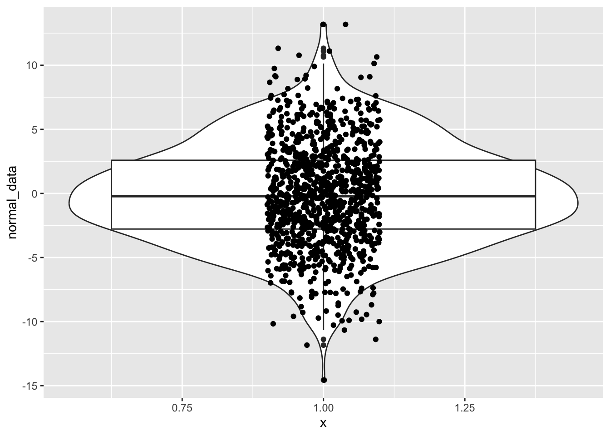
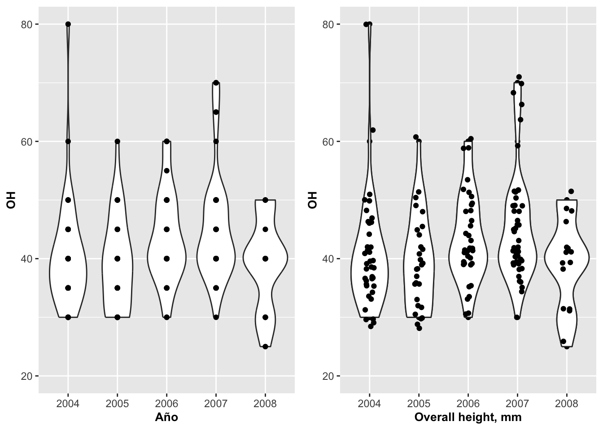
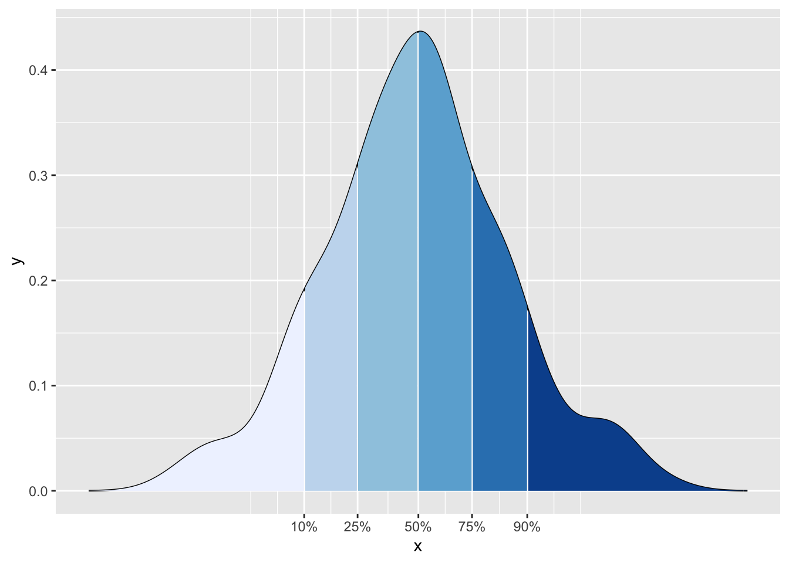

Gráficos de caja y de violín
Fecha de la ultima revisión
## [1] "2022-03-14"

library(gridExtra)# Para organizar múltiples gráficos juntos
library(tidyverse)
library(ggversa)Diagrama de caja con geom_boxplot
Para datos que no tienen una distribución normal, típicamente se usa un diagrama de caja para visualizar la distribución de los datos. El diagrama de caja distribuye los datos basándose en el rango del orden de tamaño o valor numérico. Primeramente, los datos son ordenados de menor a mayor. Los valores en el gráfico correspondiente representan los cuartiles 25, 50 y 75. Los bigotes (las líneas que se extienden de las cajas) representan 1.5 veces multiplicado por el rango intercuartil (RIC), o la distancia entre el primer cuartil (25) y el tercer cuartil (75). Los datos que están fuera de ese rango se representan con puntos. Los gráficos que usan muescas, o notch, las calculan de acuerdo a la siguiente fórmula: (1.58 x RIC) / (raíz cuadrada de la muestra). Utilizaremos nuevamente los datos de la orquídea Dipodium en los siguientes ejemplos, particularmente representando la cantidad de flores y el número de frutos.
En el primer gráfico a continuación, Fig. 1 (arriba a la izquierda), se muestra un diagrama de caja básico. Note que la variable en la primera x tiene valor de 1, lo que significa que hay un solo grupo. En el segundo gráfico, Fig. 2 (arriba a la derecha), se modifica con la opción de notch. En el tercer gráfico, Figura Fig. 3 (abajo a la izquierda), se cambió el color de la caja, la forma o shape de los valores atípicos o outliers, y su tamaño. En los tres primeros gráficos, se usan todos los datos en un mismo diagrama de caja. En el cuarto gráfico, Fig. 4 (abajo a la derecha), observamos la distribución de la cantidad de flores por el número de frutos observado por planta. Note que para este último caso en particular, hay más de un grupo.
Las muescas (notch)
Las muescas a los lados de un diagrama de caja se pueden interpretar como un intervalo de comparación alrededor de los valores de la mediana. La altura de la muesca es la mediana \(+/- 1,57 x IQR/sqrt(n)\) donde IQR es el rango intercuartílico definido por los percentiles 25 y 75 y n es el número de puntos de datos
#names(dipodium)
library(conflicted)
library(janitor)
library(gt)
dipodium=clean_names(dipodium)
gt(head(dipodium))| tree_number | tree_species | dbh | plant_number | ramet_number | distance | orientation | number_of_flowers | height_inflo | herbivory | row_position_nf | number_flowers_position | number_of_fruits | perc_fr_set | pardalinum_or_roseum | fruit_position_effect | frutos_si_o_no | p_or_r_infl_lenght | num_of_fruits | species_name | cardinal_orientation |
|---|---|---|---|---|---|---|---|---|---|---|---|---|---|---|---|---|---|---|---|---|
| 1 | E.o | 75 | 1 | 1 | 2.47 | 40 | 11 | 35 | n | 1 | 24 | 0 | 0.00 | r | 1 | 0 | r | 0 | r | 1 |
| 1 | E.o | 76 | 2 | 1 | 1.97 | 50 | 19 | 47 | n | 2 | 23 | 0 | 0.00 | r | 2 | 0 | r | 0 | r | 2 |
| 2 | E.o | 76 | 3 | 1 | 1.95 | 350 | 18 | 63 | n | 3 | 25 | 1 | 0.04 | r | 3 | 0 | r | 1 | r | 8 |
| 3 | E.o | 58 | 4 | 1 | 3.24 | 210 | 24 | 47 | n | 4 | 20 | 5 | 0.25 | r | 4 | 0 | r | 5 | r | 5 |
| 4 | E.o | NA | 5 | 1 | 0.85 | 80 | 25 | 61 | n | 5 | 13 | 0 | 0.00 | r | 5 | 0 | r | 0 | r | 2 |
| 5 | E.o | 59 | 6 | 1 | 2.62 | 160 | 17 | 35 | n | 6 | 25 | 2 | 0.08 | p | 6 | 0 | r | 2 | p | 4 |
d1=dipodium %>%
dplyr::select(number_of_fruits, number_of_flowers) %>%
drop_na()
#d1boxplot1 <- ggplot(d1, aes(number_of_fruits, x=1))+
geom_boxplot()+
annotate("text", x= 1,y= 5, label="Fig. 1")+
labs(x="", y="Cantidad de Frutos")+
theme(axis.title=element_text(size=10,face="bold"))boxplot2 <- ggplot(d1, aes(number_of_fruits, x=1))+
geom_boxplot(notch=TRUE) +
annotate("text", x= 0.7,y= 7, label="Fig. 2")+
labs(x="", y="Cantidad de Frutos")+
theme(axis.title=element_text(size=10,face="bold"))boxplot3 <- ggplot(d1, aes(number_of_fruits, x=1))+
geom_boxplot(notch=TRUE,colour="blue",
fill="orange", alpha=0.7, outlier.shape=18,
outlier.color="red", outlier.size=3)+
annotate("text", x= 0.7,y= 7, label="Fig. 3")+
labs(x="", y="Cantidad de Frutos")+
theme(axis.title=element_text(size=10,face="bold"))boxplot4 <- ggplot(d1, aes(factor(number_of_flowers), number_of_fruits))+
geom_boxplot(notch=FALSE)+
annotate("text", x= 2,y= 10, label="Fig. 4")+
labs(y="Cantidad de Frutos", x="Cantidad de Flores")+
theme(axis.title=element_text(size=10,face="bold"))+
theme(axis.text.x = element_text(angle = 90))gridExtra::grid.arrange(boxplot1,boxplot2, boxplot3, boxplot4,ncol=2)
Cambiar el ancho de las cajas
Cambiar el ancho de las cajas con varwidth. Esto produce un diagrama de caja estándar y por defecto es FALSE; si es TRUE, produce un diagrama donde el ancho en el eje de X es proporcional a la raíz cuadrada del número de observaciones en los grupos.
dipodium %>%
dplyr::select(number_of_flowers, number_of_fruits) %>%
drop_na() %>%
ggplot(aes(factor(number_of_flowers), number_of_fruits,
fill=factor(number_of_flowers)))+
geom_boxplot(varwidth=TRUE)+
theme(legend.position = "none")+
xlab("Cantidad de Flores")+
ylab("Cantidad de Frutos")
# la función varwidth =TRUE cambia
#el ancho de la barras basado en una formula indicado abajo.
# Más datos más ancho la barra. - Preparar un gráfico de caja (box plot) o tambien llamado Box and whiskers. Utiliza los datos ElphickBirdData en el paquete ggversa. Utiliza la columna AQBIRDS, que son la cantidad de pájaros acuaticos muestreados por Zuur, Ieno and Elphick. La especies de pájaro de nombre Becasa de Mar = Godwit es una ave migratoria que come pequeños moluscos en la playas. Utiliza la columna “SITE” para crear un box plot con los “notch”, por cada sitio de muestreo.
- Salvar el gráfico en formato .png y subirla a MSTeam.

La foto es de Leo Berzins via Flickr
Opciones y Parametros de geom_boxplot:
ggplot(el archivo de datos, aes(la variable continua, x=1)): {x=1} si es un grupo o el nombre de la variable discreta si hay múltiples grupos
geom_boxplot(stat, position, outlier.color, outlier.shape, outlier.size, notch, notchwidth, varwidth)
- stat: transformación estadística de los datos; solamente se necesita si se quiere anular el método por defecto que usa geom_boxplot
- position: para ajustar el solapamiento de los datos
- outlier.color: define el color de los valores atípicos
- outlier.shape: define la forma de los valores atípicos
- outlier.size: define el tamaño de los valores atípicos
- notch: para producir las muescas; se define con los valores TRUE o FALSE
- notchwidth: define el ancho de las muescas relativo a la caja (por defecto es 0.5)
- varwidth: produce un diagrama de caja estándar y por defecto es FALSE; si es TRUE, produce un diagrama donde el ancho en el eje de X es proporcional a la raíz cuadrada del número de observaciones en los grupos.
Diagrama de violín con geom_violin
El gráfico de violín es similar al gráfico de caja, pero la caja es curvada para dar una apreciación de la densidad de los datos. Si la distribución de los datos sigue una curva normal, saldrá entonces como una curva de campana orientada verticalmente. Para los ejemplos a continuación, utilizaremos los datos de la orquídea terestre australiana Caladenia valida.
El modelo básico del gráfico de violín se muestra en la Figura, Note que, tal como ocurre con geom_boxplot, si se tiene solamente un grupo, se tiene que incluir x=1. Lo que uno observa es que la mayoria de la información encuentre cerca del valor 5 y 10
library(ggplot2)
CalVal=caladeniavalida
violinplot1 <- ggplot(CalVal, aes(DCL, x=1))
violinplot1 +
geom_violin()+
annotate("text", x= 0.75,y= 19, size=8,
label="", na.rm=TRUE)+
theme(axis.title=element_text(size=10,face="bold"))+
ylab("EL largo del apendizaje dorsal")
Geom_violin con múltiples grupos
A continuación vamos a producir el gráfico de violín por diferentes factores o grupos de acuerdo al año, a la vez que se le añade color azul a los violines y se le cambia la intensidad al color con alpha=().
violinplot2 <- ggplot(CalVal, aes(y=LCL, x=factor(Year)))
violinplot2 +
geom_violin(fill="blue", alpha=0.5)+
annotate("text", x=2,y= 19, size=8,
label="", na.rm=TRUE)+
labs(x="Año", y="LCL")+
theme(axis.title=element_text(size=10,face="bold"))+
ylab("EL largo del apendizaje lateral")
El gráfico de violín con datos distribución normal
normal_data=rnorm(100000, 0, 4)
#normal_data
dfnorm=data.frame(normal_data)
head(dfnorm)## normal_data
## 1 -5.5882136
## 2 -0.2247414
## 3 3.2431923
## 4 4.3911006
## 5 3.8912112
## 6 -4.8433271library(ggplot2)
ggplot(dfnorm,aes(normal_data, x=1))+
geom_violin()
Geom_violin utilizado con geom_point y geom_jitter
Al gráfico anterior se le pueden añadir los datos para visualizar mejor la distribución. Los datos de altura de la planta OH fueron recolectado de forma discreta en unidades de 5 cm, por lo que todos los valores similares aparecerán solapados unos sobre otros. Debido a esta situación particular de ese tipo de datos, añadirle puntos para visualizarlos con la función geom_point realmente no ayuda mucho a entender su distribución. Esto es debido a que no se puede apreciar la cantidad de datos utilizados para construir los violines. Por otro lado, uno puedo utilizar geom_jitter y tener una mejor apreciación de su distribución.
Es importante tomar en consideración que si se le añade geom_point antes de geom_violin, los puntos podrían quedar escondidos detrás del violín.
violingp=violinplot3a <- ggplot(CalVal, aes(y=OH, x=factor(Year)))+
geom_violin()+
geom_point()+ # Note que los puntos serán sobrepuestos sobre el violín
annotate("text", x=2,y= 20, size=8,
label="", na.rm=TRUE)+
labs(x="Año", y="OH")+
theme(axis.title=element_text(size=10,face="bold"))
violingv=violinplot3a +
geom_violin()+
geom_jitter(position = position_jitter(width = .2))+ # Note que los puntos serán sobrepuestos sobre el violín pero no solapan uno encima del otro.
annotate("text", x=2,y= 20, size=8,
label="", na.rm=TRUE)+
labs(x="Año", y="OH")+
theme(axis.title=element_text(size=10,face="bold"))+
xlab("Overall height, mm")
grid.arrange(violingp, violingv, ncol=2)
geom_jitter y solapamiento de geom
En el próximo gráfico, se invocó geom_jitter antes que geom_violin, pero a la misma vez se le cambió la intensidad del color para que se vean mejor los puntos. Vemos que algunos de los puntos que antes están medio escondidos y los que no solapan el violin se revelan sobre mejor.
violinplot3 <- ggplot(CalVal, aes(y=OH, x=factor(Year)))
violinplot3 +
geom_jitter(position = position_jitter(width = .2), colour="red")+
geom_violin(fill="yellow", alpha=0.3)+
annotate("text", x=2,y= 20, size=8,
label="")+
labs(x="Año", y="OH")+
theme(axis.title=element_text(size=10,face="bold"))
Los cuartiles y geom_violin
Ahora se muestran el cuartil 25, la mediana (50) y el cuartil 75 en el mismo gráfico de violín con líneas horizontales.
violinplot3 <- ggplot(CalVal, aes(y=OH, x=factor(Year)))
violinplot3 +
geom_violin(draw_quantiles = c(0.05, 0.25,0.5, 0.75,0.95))+
annotate("text", x=2,y= 20, size=8,
label="")+
labs(x="Año", y="OH")+
theme(axis.title=element_text(size=10,face="bold"))Añadiendo color al contorno del violin
En esta figura se le añade color al contorno de los violines y las líneas de los cuartiles.
violinplot3 <- ggplot(CalVal, aes(y=OH, x=factor(Year)))
violinplot3 +
geom_violin(colour="red", alpha=.2, draw_quantiles = c(0.25, 0.5, 0.75))+
annotate("text", x=2,y= 20, size=8,
label="")+
labs(x="Año", y="OH")+
theme(axis.title=element_text(size=10,face="bold"))
Geom_violin por categoría o factor
En la Figura se cambia el color de cada grupo, Year. Para lograr ese efecto se le añade otra variable para representar los grupos (o categorías) por color; en este caso, la distribución de los tamaños de las plantas en términos de si produjeron frutos o no.
violinplot3 <- ggplot(na.omit(CalVal), aes(y=OH, x=factor(Year)))
violinplot3 +
geom_violin(aes(fill=(factor(Fruit_not))),
draw_quantiles = c(0.25, 0.5, 0.75))+
annotate("text", x=2,y= 20, size=8,
label="")+
labs(x="Año", y="OH")+
theme(axis.title=element_text(size=10,face="bold"))+
ylab("Altura de la planta")
Geom_violin en proporción al tamaño de la muestra
En la Figura se modifica el mismo gráfico para que tome en consideración el tamaño de muestra utilizando la opción de scale con el parámetro count. En otras palabras, los violines van a quedar modificados para incluir el tamaño de la muestra; o sea, la escala máxima del ancho es proporcional al tamaño de la muestra. Entonces, en este caso vemos el año donde hubo mayor (2007) y menor (2008) tamaño de muestra de acuerdo al ancho que se muestra para cada violín.
violinplot3 <- ggplot(CalVal, aes(y=OH, x=factor(Year)))
violinplot3 +
geom_violin(scale = "count",
draw_quantiles = c(0.25, 0.5, 0.75))+
labs(x="Año", y="OH")+
theme(axis.title=element_text(size=10,face="bold"))
Geom_violin no en proporción al tamaño de la muestra
En la Figura se modifica el ancho del violín a 1 en la escala del eje de X. En otras palabras, en este caso el ancho width del violín para el primer año va de 2003.5 al 2004.5, para el segundo violín de 2004.5 a 2005.5 y así sucesivamente en forma consecutiva para los demás años. Este enfoque crea una grado de uniformidad para cada ancho. En este caso el ancho no esta relacionado con el tamaño de muestra como el ejemplo anterior.
violinplot3 <- ggplot(CalVal, aes(y=OH, x=factor(Year)))
violinplot3 +
geom_violin(scale = "width",
draw_quantiles = c(0.25, 0.5, 0.75))+
labs(x="Año", y="OH")+
theme(axis.title=element_text(size=10,face="bold"))Geom_violin y el cambio de orientación
En la Figura cambiamos la orientación de los gráficos anteriores utilizando la opción coord_flip().
violinplot3 <- ggplot(CalVal, aes(y=OH, x=factor(Year)))
violinplot3 +
geom_violin()+
coord_flip()+
labs(x="Año")+
theme(axis.title=element_text(size=10,face="bold"))+
ylab("Altura de la planta")
Gráficos de Densidad con colores para los diferentes cuantiles
library(data.table)
dt <- data.table(x=c(1:200),y=rnorm(200)) # Crear un distribucion de 200 datos al azar con una distribución normal
dens <- density(dt$y) # calcular la densidad
df <- data.frame(x=dens$x, y=dens$y) # crear un data frame de la densidad
probs <- c(0.1, 0.25, 0.5, 0.75, 0.9) # determinar cual cuantil quiere evaluar
quantiles <- quantile(dt$y, prob=probs) # asignar cada valor a uno de los cuantiles
df$quant <- factor(findInterval(df$x,quantiles)) # Asignar los cuantiles a factores
ggplot(df, aes(x,y)) + geom_line() + geom_ribbon(aes(ymin=0, ymax=y, fill=quant)) + scale_x_continuous(breaks=quantiles) + scale_fill_brewer(guide="none")
CalVal2=
CalVal %>% select(OH) %>%
drop_na() # Seleccionar lo datos deseados removiendo los "NA"
dens2=density(CalVal2$OH)
dens2##
## Call:
## density.default(x = CalVal2$OH)
##
## Data: CalVal2$OH (163 obs.); Bandwidth 'bw' = 2.94
##
## x y
## Min. :16.18 Min. :0.0000094
## 1st Qu.:34.34 1st Qu.:0.0008163
## Median :52.50 Median :0.0050413
## Mean :52.50 Mean :0.0137526
## 3rd Qu.:70.66 3rd Qu.:0.0262349
## Max. :88.82 Max. :0.0566222df2 <- data.frame(x=dens2$x, y=dens2$y)
df2## x y
## 1 16.17920 9.649217e-06
## 2 16.32136 1.115009e-05
## 3 16.46352 1.283130e-05
## 4 16.60567 1.481782e-05
## 5 16.74783 1.704836e-05
## 6 16.88998 1.953867e-05
## 7 17.03214 2.230766e-05
## 8 17.17429 2.552660e-05
## 9 17.31645 2.912665e-05
## 10 17.45861 3.311565e-05
## 11 17.60076 3.751960e-05
## 12 17.74292 4.256323e-05
## 13 17.88507 4.818130e-05
## 14 18.02723 5.436232e-05
## 15 18.16938 6.114093e-05
## 16 18.31154 6.880036e-05
## 17 18.45370 7.729942e-05
## 18 18.59585 8.659009e-05
## 19 18.73801 9.671767e-05
## 20 18.88016 1.080266e-04
## 21 19.02232 1.205331e-04
## 22 19.16447 1.341285e-04
## 23 19.30663 1.488718e-04
## 24 19.44879 1.651693e-04
## 25 19.59094 1.831462e-04
## 26 19.73310 2.025999e-04
## 27 19.87525 2.236081e-04
## 28 20.01741 2.466375e-04
## 29 20.15956 2.720007e-04
## 30 20.30172 2.993537e-04
## 31 20.44388 3.288010e-04
## 32 20.58603 3.608637e-04
## 33 20.72819 3.961595e-04
## 34 20.87034 4.341334e-04
## 35 21.01250 4.749269e-04
## 36 21.15466 5.191002e-04
## 37 21.29681 5.677475e-04
## 38 21.43897 6.199984e-04
## 39 21.58112 6.760421e-04
## 40 21.72328 7.364413e-04
## 41 21.86543 8.030076e-04
## 42 22.00759 8.743990e-04
## 43 22.14975 9.508604e-04
## 44 22.29190 1.032884e-03
## 45 22.43406 1.123312e-03
## 46 22.57621 1.220111e-03
## 47 22.71837 1.323581e-03
## 48 22.86052 1.434023e-03
## 49 23.00268 1.555667e-03
## 50 23.14484 1.685517e-03
## 51 23.28699 1.823907e-03
## 52 23.42915 1.971172e-03
## 53 23.57130 2.132083e-03
## 54 23.71346 2.303575e-03
## 55 23.85561 2.485576e-03
## 56 23.99777 2.678417e-03
## 57 24.13993 2.887150e-03
## 58 24.28208 3.108869e-03
## 59 24.42424 3.342872e-03
## 60 24.56639 3.589421e-03
## 61 24.70855 3.853458e-03
## 62 24.85070 4.132482e-03
## 63 24.99286 4.424973e-03
## 64 25.13502 4.731046e-03
## 65 25.27717 5.055063e-03
## 66 25.41933 5.395116e-03
## 67 25.56148 5.748795e-03
## 68 25.70364 6.116000e-03
## 69 25.84580 6.500067e-03
## 70 25.98795 6.899721e-03
## 71 26.13011 7.311799e-03
## 72 26.27226 7.735947e-03
## 73 26.41442 8.174183e-03
## 74 26.55657 8.625683e-03
## 75 26.69873 9.086934e-03
## 76 26.84089 9.557339e-03
## 77 26.98304 1.003757e-02
## 78 27.12520 1.052685e-02
## 79 27.26735 1.102196e-02
## 80 27.40951 1.152213e-02
## 81 27.55166 1.202695e-02
## 82 27.69382 1.253518e-02
## 83 27.83598 1.304463e-02
## 84 27.97813 1.355451e-02
## 85 28.12029 1.406382e-02
## 86 28.26244 1.457040e-02
## 87 28.40460 1.507375e-02
## 88 28.54675 1.557321e-02
## 89 28.68891 1.606778e-02
## 90 28.83107 1.655419e-02
## 91 28.97322 1.703397e-02
## 92 29.11538 1.750673e-02
## 93 29.25753 1.797196e-02
## 94 29.39969 1.842553e-02
## 95 29.54184 1.887082e-02
## 96 29.68400 1.930780e-02
## 97 29.82616 1.973641e-02
## 98 29.96831 2.015309e-02
## 99 30.11047 2.056167e-02
## 100 30.25262 2.096268e-02
## 101 30.39478 2.135644e-02
## 102 30.53694 2.174095e-02
## 103 30.67909 2.211940e-02
## 104 30.82125 2.249283e-02
## 105 30.96340 2.286180e-02
## 106 31.10556 2.322608e-02
## 107 31.24771 2.358794e-02
## 108 31.38987 2.394845e-02
## 109 31.53203 2.430830e-02
## 110 31.67418 2.466878e-02
## 111 31.81634 2.503135e-02
## 112 31.95849 2.539662e-02
## 113 32.10065 2.576529e-02
## 114 32.24280 2.613963e-02
## 115 32.38496 2.652075e-02
## 116 32.52712 2.690838e-02
## 117 32.66927 2.730311e-02
## 118 32.81143 2.770769e-02
## 119 32.95358 2.812342e-02
## 120 33.09574 2.854887e-02
## 121 33.23789 2.898454e-02
## 122 33.38005 2.943321e-02
## 123 33.52221 2.989689e-02
## 124 33.66436 3.037291e-02
## 125 33.80652 3.086164e-02
## 126 33.94867 3.136564e-02
## 127 34.09083 3.188799e-02
## 128 34.23298 3.242472e-02
## 129 34.37514 3.297611e-02
## 130 34.51730 3.354416e-02
## 131 34.65945 3.413326e-02
## 132 34.80161 3.473804e-02
## 133 34.94376 3.535862e-02
## 134 35.08592 3.599619e-02
## 135 35.22808 3.665615e-02
## 136 35.37023 3.733181e-02
## 137 35.51239 3.802294e-02
## 138 35.65454 3.872972e-02
## 139 35.79670 3.945752e-02
## 140 35.93885 4.019878e-02
## 141 36.08101 4.095274e-02
## 142 36.22317 4.171868e-02
## 143 36.36532 4.249952e-02
## 144 36.50748 4.328842e-02
## 145 36.64963 4.408383e-02
## 146 36.79179 4.488435e-02
## 147 36.93394 4.568798e-02
## 148 37.07610 4.649021e-02
## 149 37.21826 4.728885e-02
## 150 37.36041 4.808182e-02
## 151 37.50257 4.886166e-02
## 152 37.64472 4.962601e-02
## 153 37.78688 5.037329e-02
## 154 37.92903 5.110096e-02
## 155 38.07119 5.179668e-02
## 156 38.21335 5.245939e-02
## 157 38.35550 5.308988e-02
## 158 38.49766 5.368553e-02
## 159 38.63981 5.423093e-02
## 160 38.78197 5.472494e-02
## 161 38.92413 5.517253e-02
## 162 39.06628 5.557157e-02
## 163 39.20844 5.590606e-02
## 164 39.35059 5.617344e-02
## 165 39.49275 5.638412e-02
## 166 39.63490 5.653690e-02
## 167 39.77706 5.661788e-02
## 168 39.91922 5.662225e-02
## 169 40.06137 5.656590e-02
## 170 40.20353 5.644891e-02
## 171 40.34568 5.626143e-02
## 172 40.48784 5.599661e-02
## 173 40.62999 5.567449e-02
## 174 40.77215 5.529640e-02
## 175 40.91431 5.485733e-02
## 176 41.05646 5.434981e-02
## 177 41.19862 5.379528e-02
## 178 41.34077 5.319609e-02
## 179 41.48293 5.255154e-02
## 180 41.62508 5.185574e-02
## 181 41.76724 5.112815e-02
## 182 41.90940 5.037167e-02
## 183 42.05155 4.958840e-02
## 184 42.19371 4.877642e-02
## 185 42.33586 4.794997e-02
## 186 42.47802 4.711199e-02
## 187 42.62017 4.626541e-02
## 188 42.76233 4.541421e-02
## 189 42.90449 4.456507e-02
## 190 43.04664 4.372052e-02
## 191 43.18880 4.288309e-02
## 192 43.33095 4.206202e-02
## 193 43.47311 4.125703e-02
## 194 43.61527 4.046949e-02
## 195 43.75742 3.970122e-02
## 196 43.89958 3.896375e-02
## 197 44.04173 3.825308e-02
## 198 44.18389 3.756840e-02
## 199 44.32604 3.691075e-02
## 200 44.46820 3.629160e-02
## 201 44.61036 3.570589e-02
## 202 44.75251 3.515033e-02
## 203 44.89467 3.462525e-02
## 204 45.03682 3.414048e-02
## 205 45.17898 3.369164e-02
## 206 45.32113 3.327325e-02
## 207 45.46329 3.288505e-02
## 208 45.60545 3.253438e-02
## 209 45.74760 3.221829e-02
## 210 45.88976 3.192979e-02
## 211 46.03191 3.166809e-02
## 212 46.17407 3.143778e-02
## 213 46.31622 3.123722e-02
## 214 46.45838 3.105876e-02
## 215 46.60054 3.090125e-02
## 216 46.74269 3.076656e-02
## 217 46.88485 3.065357e-02
## 218 47.02700 3.055509e-02
## 219 47.16916 3.046964e-02
## 220 47.31131 3.039686e-02
## 221 47.45347 3.033485e-02
## 222 47.59563 3.027815e-02
## 223 47.73778 3.022509e-02
## 224 47.87994 3.017379e-02
## 225 48.02209 3.012015e-02
## 226 48.16425 3.006182e-02
## 227 48.30641 2.999707e-02
## 228 48.44856 2.992356e-02
## 229 48.59072 2.983369e-02
## 230 48.73287 2.972944e-02
## 231 48.87503 2.960931e-02
## 232 49.01718 2.947152e-02
## 233 49.15934 2.930437e-02
## 234 49.30150 2.911490e-02
## 235 49.44365 2.890206e-02
## 236 49.58581 2.866483e-02
## 237 49.72796 2.838996e-02
## 238 49.87012 2.808719e-02
## 239 50.01227 2.775687e-02
## 240 50.15443 2.739867e-02
## 241 50.29659 2.700083e-02
## 242 50.43874 2.657307e-02
## 243 50.58090 2.611777e-02
## 244 50.72305 2.563532e-02
## 245 50.86521 2.511715e-02
## 246 51.00736 2.457165e-02
## 247 51.14952 2.400284e-02
## 248 51.29168 2.341181e-02
## 249 51.43383 2.279399e-02
## 250 51.57599 2.215591e-02
## 251 51.71814 2.150226e-02
## 252 51.86030 2.083464e-02
## 253 52.00245 2.015235e-02
## 254 52.14461 1.946034e-02
## 255 52.28677 1.876267e-02
## 256 52.42892 1.806111e-02
## 257 52.57108 1.735798e-02
## 258 52.71323 1.665750e-02
## 259 52.85539 1.596171e-02
## 260 52.99755 1.527228e-02
## 261 53.13970 1.459323e-02
## 262 53.28186 1.392912e-02
## 263 53.42401 1.327891e-02
## 264 53.56617 1.264395e-02
## 265 53.70832 1.202858e-02
## 266 53.85048 1.143861e-02
## 267 53.99264 1.086945e-02
## 268 54.13479 1.032198e-02
## 269 54.27695 9.799767e-03
## 270 54.41910 9.310307e-03
## 271 54.56126 8.845654e-03
## 272 54.70341 8.406165e-03
## 273 54.84557 7.994005e-03
## 274 54.98773 7.618230e-03
## 275 55.12988 7.268293e-03
## 276 55.27204 6.944070e-03
## 277 55.41419 6.646130e-03
## 278 55.55635 6.384495e-03
## 279 55.69850 6.147135e-03
## 280 55.84066 5.933542e-03
## 281 55.98282 5.743199e-03
## 282 56.12497 5.585219e-03
## 283 56.26713 5.448289e-03
## 284 56.40928 5.331331e-03
## 285 56.55144 5.233571e-03
## 286 56.69359 5.161000e-03
## 287 56.83575 5.105372e-03
## 288 56.97791 5.064786e-03
## 289 57.12006 5.038339e-03
## 290 57.26222 5.029212e-03
## 291 57.40437 5.031912e-03
## 292 57.54653 5.044281e-03
## 293 57.68869 5.065396e-03
## 294 57.83084 5.096207e-03
## 295 57.97300 5.133340e-03
## 296 58.11515 5.174932e-03
## 297 58.25731 5.220141e-03
## 298 58.39946 5.268388e-03
## 299 58.54162 5.317676e-03
## 300 58.68378 5.366888e-03
## 301 58.82593 5.415344e-03
## 302 58.96809 5.461650e-03
## 303 59.11024 5.504500e-03
## 304 59.25240 5.543805e-03
## 305 59.39455 5.579098e-03
## 306 59.53671 5.608798e-03
## 307 59.67887 5.631787e-03
## 308 59.82102 5.649062e-03
## 309 59.96318 5.660395e-03
## 310 60.10533 5.664471e-03
## 311 60.24749 5.660108e-03
## 312 60.38964 5.649221e-03
## 313 60.53180 5.631805e-03
## 314 60.67396 5.607059e-03
## 315 60.81611 5.573730e-03
## 316 60.95827 5.534289e-03
## 317 61.10042 5.488916e-03
## 318 61.24258 5.437352e-03
## 319 61.38473 5.378462e-03
## 320 61.52689 5.314802e-03
## 321 61.66905 5.246670e-03
## 322 61.81120 5.174219e-03
## 323 61.95336 5.096715e-03
## 324 62.09551 5.016317e-03
## 325 62.23767 4.933372e-03
## 326 62.37983 4.848227e-03
## 327 62.52198 4.760810e-03
## 328 62.66414 4.672511e-03
## 329 62.80629 4.583657e-03
## 330 62.94845 4.494573e-03
## 331 63.09060 4.405983e-03
## 332 63.23276 4.318329e-03
## 333 63.37492 4.231861e-03
## 334 63.51707 4.146840e-03
## 335 63.65923 4.064421e-03
## 336 63.80138 3.984464e-03
## 337 63.94354 3.906987e-03
## 338 64.08569 3.832164e-03
## 339 64.22785 3.761271e-03
## 340 64.37001 3.693916e-03
## 341 64.51216 3.629816e-03
## 342 64.65432 3.569056e-03
## 343 64.79647 3.512806e-03
## 344 64.93863 3.460665e-03
## 345 65.08078 3.412057e-03
## 346 65.22294 3.366985e-03
## 347 65.36510 3.326375e-03
## 348 65.50725 3.289951e-03
## 349 65.64941 3.256905e-03
## 350 65.79156 3.227174e-03
## 351 65.93372 3.201376e-03
## 352 66.07587 3.179377e-03
## 353 66.21803 3.160247e-03
## 354 66.36019 3.143867e-03
## 355 66.50234 3.130539e-03
## 356 66.64450 3.120205e-03
## 357 66.78665 3.111940e-03
## 358 66.92881 3.105581e-03
## 359 67.07097 3.101157e-03
## 360 67.21312 3.098547e-03
## 361 67.35528 3.096984e-03
## 362 67.49743 3.096278e-03
## 363 67.63959 3.096259e-03
## 364 67.78174 3.096577e-03
## 365 67.92390 3.096790e-03
## 366 68.06606 3.096694e-03
## 367 68.20821 3.096036e-03
## 368 68.35037 3.094076e-03
## 369 68.49252 3.090846e-03
## 370 68.63468 3.086161e-03
## 371 68.77683 3.079805e-03
## 372 68.91899 3.070545e-03
## 373 69.06115 3.058998e-03
## 374 69.20330 3.045023e-03
## 375 69.34546 3.028476e-03
## 376 69.48761 3.007867e-03
## 377 69.62977 2.984183e-03
## 378 69.77192 2.957430e-03
## 379 69.91408 2.927535e-03
## 380 70.05624 2.893094e-03
## 381 70.19839 2.855157e-03
## 382 70.34055 2.813961e-03
## 383 70.48270 2.769521e-03
## 384 70.62486 2.720732e-03
## 385 70.76702 2.668539e-03
## 386 70.90917 2.613397e-03
## 387 71.05133 2.555403e-03
## 388 71.19348 2.493882e-03
## 389 71.33564 2.429594e-03
## 390 71.47779 2.363115e-03
## 391 71.61995 2.294612e-03
## 392 71.76211 2.223862e-03
## 393 71.90426 2.151453e-03
## 394 72.04642 2.077935e-03
## 395 72.18857 2.003513e-03
## 396 72.33073 1.928347e-03
## 397 72.47288 1.852941e-03
## 398 72.61504 1.777649e-03
## 399 72.75720 1.702682e-03
## 400 72.89935 1.628446e-03
## 401 73.04151 1.555488e-03
## 402 73.18366 1.483819e-03
## 403 73.32582 1.413624e-03
## 404 73.46797 1.345399e-03
## 405 73.61013 1.279847e-03
## 406 73.75229 1.216551e-03
## 407 73.89444 1.155645e-03
## 408 74.03660 1.097574e-03
## 409 74.17875 1.043265e-03
## 410 74.32091 9.918617e-04
## 411 74.46306 9.434357e-04
## 412 74.60522 8.982794e-04
## 413 74.74738 8.575501e-04
## 414 74.88953 8.200109e-04
## 415 75.03169 7.856706e-04
## 416 75.17384 7.546263e-04
## 417 75.31600 7.281936e-04
## 418 75.45816 7.048810e-04
## 419 75.60031 6.846402e-04
## 420 75.74247 6.674216e-04
## 421 75.88462 6.544502e-04
## 422 76.02678 6.442629e-04
## 423 76.16893 6.367263e-04
## 424 76.31109 6.317462e-04
## 425 76.45325 6.301344e-04
## 426 76.59540 6.307910e-04
## 427 76.73756 6.334596e-04
## 428 76.87971 6.380164e-04
## 429 77.02187 6.448708e-04
## 430 77.16402 6.532705e-04
## 431 77.30618 6.629137e-04
## 432 77.44834 6.736628e-04
## 433 77.59049 6.855852e-04
## 434 77.73265 6.982041e-04
## 435 77.87480 7.112600e-04
## 436 78.01696 7.246172e-04
## 437 78.15911 7.380940e-04
## 438 78.30127 7.513889e-04
## 439 78.44343 7.643655e-04
## 440 78.58558 7.769055e-04
## 441 78.72774 7.886861e-04
## 442 78.86989 7.994786e-04
## 443 79.01205 8.093299e-04
## 444 79.15420 8.181514e-04
## 445 79.29636 8.255845e-04
## 446 79.43852 8.313932e-04
## 447 79.58067 8.358329e-04
## 448 79.72283 8.388536e-04
## 449 79.86498 8.401461e-04
## 450 80.00714 8.394250e-04
## 451 80.14930 8.371384e-04
## 452 80.29145 8.332777e-04
## 453 80.43361 8.276369e-04
## 454 80.57576 8.198830e-04
## 455 80.71792 8.106009e-04
## 456 80.86007 7.998198e-04
## 457 81.00223 7.874531e-04
## 458 81.14439 7.731623e-04
## 459 81.28654 7.575819e-04
## 460 81.42870 7.407702e-04
## 461 81.57085 7.227421e-04
## 462 81.71301 7.032200e-04
## 463 81.85516 6.827887e-04
## 464 81.99732 6.615225e-04
## 465 82.13948 6.394961e-04
## 466 82.28163 6.165646e-04
## 467 82.42379 5.931699e-04
## 468 82.56594 5.693892e-04
## 469 82.70810 5.452997e-04
## 470 82.85025 5.209650e-04
## 471 82.99241 4.965971e-04
## 472 83.13457 4.722711e-04
## 473 83.27672 4.480544e-04
## 474 83.41888 4.241456e-04
## 475 83.56103 4.005963e-04
## 476 83.70319 3.774387e-04
## 477 83.84534 3.547228e-04
## 478 83.98750 3.327067e-04
## 479 84.12966 3.113567e-04
## 480 84.27181 2.906373e-04
## 481 84.41397 2.705781e-04
## 482 84.55612 2.514360e-04
## 483 84.69828 2.331534e-04
## 484 84.84044 2.156226e-04
## 485 84.98259 1.988534e-04
## 486 85.12475 1.830624e-04
## 487 85.26690 1.682085e-04
## 488 85.40906 1.541234e-04
## 489 85.55121 1.408013e-04
## 490 85.69337 1.284008e-04
## 491 85.83553 1.169151e-04
## 492 85.97768 1.061379e-04
## 493 86.11984 9.605327e-05
## 494 86.26199 8.676115e-05
## 495 86.40415 7.828978e-05
## 496 86.54630 7.042030e-05
## 497 86.68846 6.313194e-05
## 498 86.83062 5.647611e-05
## 499 86.97277 5.050645e-05
## 500 87.11493 4.501411e-05
## 501 87.25708 3.997768e-05
## 502 87.39924 3.541434e-05
## 503 87.54139 3.139004e-05
## 504 87.68355 2.772177e-05
## 505 87.82571 2.439033e-05
## 506 87.96786 2.139248e-05
## 507 88.11002 1.879472e-05
## 508 88.25217 1.644800e-05
## 509 88.39433 1.433670e-05
## 510 88.53648 1.244810e-05
## 511 88.67864 1.084112e-05
## 512 88.82080 9.402047e-06probs <- c(0.0001, 0.1, 0.25, 0.5, 0.75, 0.9, 0.95, .99)
quantiles <- quantile(CalVal2$OH, prob=probs)
df2 <- data.frame(x=dens2$x, y=dens2$y)
df2$quant <- factor(findInterval(df2$x,quantiles))
df2## x y quant
## 1 16.17920 9.649217e-06 0
## 2 16.32136 1.115009e-05 0
## 3 16.46352 1.283130e-05 0
## 4 16.60567 1.481782e-05 0
## 5 16.74783 1.704836e-05 0
## 6 16.88998 1.953867e-05 0
## 7 17.03214 2.230766e-05 0
## 8 17.17429 2.552660e-05 0
## 9 17.31645 2.912665e-05 0
## 10 17.45861 3.311565e-05 0
## 11 17.60076 3.751960e-05 0
## 12 17.74292 4.256323e-05 0
## 13 17.88507 4.818130e-05 0
## 14 18.02723 5.436232e-05 0
## 15 18.16938 6.114093e-05 0
## 16 18.31154 6.880036e-05 0
## 17 18.45370 7.729942e-05 0
## 18 18.59585 8.659009e-05 0
## 19 18.73801 9.671767e-05 0
## 20 18.88016 1.080266e-04 0
## 21 19.02232 1.205331e-04 0
## 22 19.16447 1.341285e-04 0
## 23 19.30663 1.488718e-04 0
## 24 19.44879 1.651693e-04 0
## 25 19.59094 1.831462e-04 0
## 26 19.73310 2.025999e-04 0
## 27 19.87525 2.236081e-04 0
## 28 20.01741 2.466375e-04 0
## 29 20.15956 2.720007e-04 0
## 30 20.30172 2.993537e-04 0
## 31 20.44388 3.288010e-04 0
## 32 20.58603 3.608637e-04 0
## 33 20.72819 3.961595e-04 0
## 34 20.87034 4.341334e-04 0
## 35 21.01250 4.749269e-04 0
## 36 21.15466 5.191002e-04 0
## 37 21.29681 5.677475e-04 0
## 38 21.43897 6.199984e-04 0
## 39 21.58112 6.760421e-04 0
## 40 21.72328 7.364413e-04 0
## 41 21.86543 8.030076e-04 0
## 42 22.00759 8.743990e-04 0
## 43 22.14975 9.508604e-04 0
## 44 22.29190 1.032884e-03 0
## 45 22.43406 1.123312e-03 0
## 46 22.57621 1.220111e-03 0
## 47 22.71837 1.323581e-03 0
## 48 22.86052 1.434023e-03 0
## 49 23.00268 1.555667e-03 0
## 50 23.14484 1.685517e-03 0
## 51 23.28699 1.823907e-03 0
## 52 23.42915 1.971172e-03 0
## 53 23.57130 2.132083e-03 0
## 54 23.71346 2.303575e-03 0
## 55 23.85561 2.485576e-03 0
## 56 23.99777 2.678417e-03 0
## 57 24.13993 2.887150e-03 0
## 58 24.28208 3.108869e-03 0
## 59 24.42424 3.342872e-03 0
## 60 24.56639 3.589421e-03 0
## 61 24.70855 3.853458e-03 0
## 62 24.85070 4.132482e-03 0
## 63 24.99286 4.424973e-03 0
## 64 25.13502 4.731046e-03 1
## 65 25.27717 5.055063e-03 1
## 66 25.41933 5.395116e-03 1
## 67 25.56148 5.748795e-03 1
## 68 25.70364 6.116000e-03 1
## 69 25.84580 6.500067e-03 1
## 70 25.98795 6.899721e-03 1
## 71 26.13011 7.311799e-03 1
## 72 26.27226 7.735947e-03 1
## 73 26.41442 8.174183e-03 1
## 74 26.55657 8.625683e-03 1
## 75 26.69873 9.086934e-03 1
## 76 26.84089 9.557339e-03 1
## 77 26.98304 1.003757e-02 1
## 78 27.12520 1.052685e-02 1
## 79 27.26735 1.102196e-02 1
## 80 27.40951 1.152213e-02 1
## 81 27.55166 1.202695e-02 1
## 82 27.69382 1.253518e-02 1
## 83 27.83598 1.304463e-02 1
## 84 27.97813 1.355451e-02 1
## 85 28.12029 1.406382e-02 1
## 86 28.26244 1.457040e-02 1
## 87 28.40460 1.507375e-02 1
## 88 28.54675 1.557321e-02 1
## 89 28.68891 1.606778e-02 1
## 90 28.83107 1.655419e-02 1
## 91 28.97322 1.703397e-02 1
## 92 29.11538 1.750673e-02 1
## 93 29.25753 1.797196e-02 1
## 94 29.39969 1.842553e-02 1
## 95 29.54184 1.887082e-02 1
## 96 29.68400 1.930780e-02 1
## 97 29.82616 1.973641e-02 1
## 98 29.96831 2.015309e-02 1
## 99 30.11047 2.056167e-02 2
## 100 30.25262 2.096268e-02 2
## 101 30.39478 2.135644e-02 2
## 102 30.53694 2.174095e-02 2
## 103 30.67909 2.211940e-02 2
## 104 30.82125 2.249283e-02 2
## 105 30.96340 2.286180e-02 2
## 106 31.10556 2.322608e-02 2
## 107 31.24771 2.358794e-02 2
## 108 31.38987 2.394845e-02 2
## 109 31.53203 2.430830e-02 2
## 110 31.67418 2.466878e-02 2
## 111 31.81634 2.503135e-02 2
## 112 31.95849 2.539662e-02 2
## 113 32.10065 2.576529e-02 2
## 114 32.24280 2.613963e-02 2
## 115 32.38496 2.652075e-02 2
## 116 32.52712 2.690838e-02 2
## 117 32.66927 2.730311e-02 2
## 118 32.81143 2.770769e-02 2
## 119 32.95358 2.812342e-02 2
## 120 33.09574 2.854887e-02 2
## 121 33.23789 2.898454e-02 2
## 122 33.38005 2.943321e-02 2
## 123 33.52221 2.989689e-02 2
## 124 33.66436 3.037291e-02 2
## 125 33.80652 3.086164e-02 2
## 126 33.94867 3.136564e-02 2
## 127 34.09083 3.188799e-02 2
## 128 34.23298 3.242472e-02 2
## 129 34.37514 3.297611e-02 2
## 130 34.51730 3.354416e-02 2
## 131 34.65945 3.413326e-02 2
## 132 34.80161 3.473804e-02 2
## 133 34.94376 3.535862e-02 2
## 134 35.08592 3.599619e-02 3
## 135 35.22808 3.665615e-02 3
## 136 35.37023 3.733181e-02 3
## 137 35.51239 3.802294e-02 3
## 138 35.65454 3.872972e-02 3
## 139 35.79670 3.945752e-02 3
## 140 35.93885 4.019878e-02 3
## 141 36.08101 4.095274e-02 3
## 142 36.22317 4.171868e-02 3
## 143 36.36532 4.249952e-02 3
## 144 36.50748 4.328842e-02 3
## 145 36.64963 4.408383e-02 3
## 146 36.79179 4.488435e-02 3
## 147 36.93394 4.568798e-02 3
## 148 37.07610 4.649021e-02 3
## 149 37.21826 4.728885e-02 3
## 150 37.36041 4.808182e-02 3
## 151 37.50257 4.886166e-02 3
## 152 37.64472 4.962601e-02 3
## 153 37.78688 5.037329e-02 3
## 154 37.92903 5.110096e-02 3
## 155 38.07119 5.179668e-02 3
## 156 38.21335 5.245939e-02 3
## 157 38.35550 5.308988e-02 3
## 158 38.49766 5.368553e-02 3
## 159 38.63981 5.423093e-02 3
## 160 38.78197 5.472494e-02 3
## 161 38.92413 5.517253e-02 3
## 162 39.06628 5.557157e-02 3
## 163 39.20844 5.590606e-02 3
## 164 39.35059 5.617344e-02 3
## 165 39.49275 5.638412e-02 3
## 166 39.63490 5.653690e-02 3
## 167 39.77706 5.661788e-02 3
## 168 39.91922 5.662225e-02 3
## 169 40.06137 5.656590e-02 4
## 170 40.20353 5.644891e-02 4
## 171 40.34568 5.626143e-02 4
## 172 40.48784 5.599661e-02 4
## 173 40.62999 5.567449e-02 4
## 174 40.77215 5.529640e-02 4
## 175 40.91431 5.485733e-02 4
## 176 41.05646 5.434981e-02 4
## 177 41.19862 5.379528e-02 4
## 178 41.34077 5.319609e-02 4
## 179 41.48293 5.255154e-02 4
## 180 41.62508 5.185574e-02 4
## 181 41.76724 5.112815e-02 4
## 182 41.90940 5.037167e-02 4
## 183 42.05155 4.958840e-02 4
## 184 42.19371 4.877642e-02 4
## 185 42.33586 4.794997e-02 4
## 186 42.47802 4.711199e-02 4
## 187 42.62017 4.626541e-02 4
## 188 42.76233 4.541421e-02 4
## 189 42.90449 4.456507e-02 4
## 190 43.04664 4.372052e-02 4
## 191 43.18880 4.288309e-02 4
## 192 43.33095 4.206202e-02 4
## 193 43.47311 4.125703e-02 4
## 194 43.61527 4.046949e-02 4
## 195 43.75742 3.970122e-02 4
## 196 43.89958 3.896375e-02 4
## 197 44.04173 3.825308e-02 4
## 198 44.18389 3.756840e-02 4
## 199 44.32604 3.691075e-02 4
## 200 44.46820 3.629160e-02 4
## 201 44.61036 3.570589e-02 4
## 202 44.75251 3.515033e-02 4
## 203 44.89467 3.462525e-02 4
## 204 45.03682 3.414048e-02 4
## 205 45.17898 3.369164e-02 4
## 206 45.32113 3.327325e-02 4
## 207 45.46329 3.288505e-02 4
## 208 45.60545 3.253438e-02 4
## 209 45.74760 3.221829e-02 4
## 210 45.88976 3.192979e-02 4
## 211 46.03191 3.166809e-02 4
## 212 46.17407 3.143778e-02 4
## 213 46.31622 3.123722e-02 4
## 214 46.45838 3.105876e-02 4
## 215 46.60054 3.090125e-02 4
## 216 46.74269 3.076656e-02 4
## 217 46.88485 3.065357e-02 4
## 218 47.02700 3.055509e-02 4
## 219 47.16916 3.046964e-02 4
## 220 47.31131 3.039686e-02 4
## 221 47.45347 3.033485e-02 4
## 222 47.59563 3.027815e-02 5
## 223 47.73778 3.022509e-02 5
## 224 47.87994 3.017379e-02 5
## 225 48.02209 3.012015e-02 5
## 226 48.16425 3.006182e-02 5
## 227 48.30641 2.999707e-02 5
## 228 48.44856 2.992356e-02 5
## 229 48.59072 2.983369e-02 5
## 230 48.73287 2.972944e-02 5
## 231 48.87503 2.960931e-02 5
## 232 49.01718 2.947152e-02 5
## 233 49.15934 2.930437e-02 5
## 234 49.30150 2.911490e-02 5
## 235 49.44365 2.890206e-02 5
## 236 49.58581 2.866483e-02 5
## 237 49.72796 2.838996e-02 5
## 238 49.87012 2.808719e-02 5
## 239 50.01227 2.775687e-02 6
## 240 50.15443 2.739867e-02 6
## 241 50.29659 2.700083e-02 6
## 242 50.43874 2.657307e-02 6
## 243 50.58090 2.611777e-02 6
## 244 50.72305 2.563532e-02 6
## 245 50.86521 2.511715e-02 6
## 246 51.00736 2.457165e-02 6
## 247 51.14952 2.400284e-02 6
## 248 51.29168 2.341181e-02 6
## 249 51.43383 2.279399e-02 6
## 250 51.57599 2.215591e-02 6
## 251 51.71814 2.150226e-02 6
## 252 51.86030 2.083464e-02 6
## 253 52.00245 2.015235e-02 6
## 254 52.14461 1.946034e-02 6
## 255 52.28677 1.876267e-02 6
## 256 52.42892 1.806111e-02 6
## 257 52.57108 1.735798e-02 6
## 258 52.71323 1.665750e-02 6
## 259 52.85539 1.596171e-02 6
## 260 52.99755 1.527228e-02 6
## 261 53.13970 1.459323e-02 6
## 262 53.28186 1.392912e-02 6
## 263 53.42401 1.327891e-02 6
## 264 53.56617 1.264395e-02 6
## 265 53.70832 1.202858e-02 6
## 266 53.85048 1.143861e-02 6
## 267 53.99264 1.086945e-02 6
## 268 54.13479 1.032198e-02 6
## 269 54.27695 9.799767e-03 6
## 270 54.41910 9.310307e-03 6
## 271 54.56126 8.845654e-03 6
## 272 54.70341 8.406165e-03 6
## 273 54.84557 7.994005e-03 6
## 274 54.98773 7.618230e-03 6
## 275 55.12988 7.268293e-03 6
## 276 55.27204 6.944070e-03 6
## 277 55.41419 6.646130e-03 6
## 278 55.55635 6.384495e-03 6
## 279 55.69850 6.147135e-03 6
## 280 55.84066 5.933542e-03 6
## 281 55.98282 5.743199e-03 6
## 282 56.12497 5.585219e-03 6
## 283 56.26713 5.448289e-03 6
## 284 56.40928 5.331331e-03 6
## 285 56.55144 5.233571e-03 6
## 286 56.69359 5.161000e-03 6
## 287 56.83575 5.105372e-03 6
## 288 56.97791 5.064786e-03 6
## 289 57.12006 5.038339e-03 6
## 290 57.26222 5.029212e-03 6
## 291 57.40437 5.031912e-03 6
## 292 57.54653 5.044281e-03 6
## 293 57.68869 5.065396e-03 6
## 294 57.83084 5.096207e-03 6
## 295 57.97300 5.133340e-03 6
## 296 58.11515 5.174932e-03 6
## 297 58.25731 5.220141e-03 6
## 298 58.39946 5.268388e-03 6
## 299 58.54162 5.317676e-03 6
## 300 58.68378 5.366888e-03 6
## 301 58.82593 5.415344e-03 6
## 302 58.96809 5.461650e-03 6
## 303 59.11024 5.504500e-03 6
## 304 59.25240 5.543805e-03 6
## 305 59.39455 5.579098e-03 6
## 306 59.53671 5.608798e-03 6
## 307 59.67887 5.631787e-03 6
## 308 59.82102 5.649062e-03 6
## 309 59.96318 5.660395e-03 6
## 310 60.10533 5.664471e-03 7
## 311 60.24749 5.660108e-03 7
## 312 60.38964 5.649221e-03 7
## 313 60.53180 5.631805e-03 7
## 314 60.67396 5.607059e-03 7
## 315 60.81611 5.573730e-03 7
## 316 60.95827 5.534289e-03 7
## 317 61.10042 5.488916e-03 7
## 318 61.24258 5.437352e-03 7
## 319 61.38473 5.378462e-03 7
## 320 61.52689 5.314802e-03 7
## 321 61.66905 5.246670e-03 7
## 322 61.81120 5.174219e-03 7
## 323 61.95336 5.096715e-03 7
## 324 62.09551 5.016317e-03 7
## 325 62.23767 4.933372e-03 7
## 326 62.37983 4.848227e-03 7
## 327 62.52198 4.760810e-03 7
## 328 62.66414 4.672511e-03 7
## 329 62.80629 4.583657e-03 7
## 330 62.94845 4.494573e-03 7
## 331 63.09060 4.405983e-03 7
## 332 63.23276 4.318329e-03 7
## 333 63.37492 4.231861e-03 7
## 334 63.51707 4.146840e-03 7
## 335 63.65923 4.064421e-03 7
## 336 63.80138 3.984464e-03 7
## 337 63.94354 3.906987e-03 7
## 338 64.08569 3.832164e-03 7
## 339 64.22785 3.761271e-03 7
## 340 64.37001 3.693916e-03 7
## 341 64.51216 3.629816e-03 7
## 342 64.65432 3.569056e-03 7
## 343 64.79647 3.512806e-03 7
## 344 64.93863 3.460665e-03 7
## 345 65.08078 3.412057e-03 7
## 346 65.22294 3.366985e-03 7
## 347 65.36510 3.326375e-03 7
## 348 65.50725 3.289951e-03 7
## 349 65.64941 3.256905e-03 7
## 350 65.79156 3.227174e-03 7
## 351 65.93372 3.201376e-03 7
## 352 66.07587 3.179377e-03 7
## 353 66.21803 3.160247e-03 7
## 354 66.36019 3.143867e-03 7
## 355 66.50234 3.130539e-03 7
## 356 66.64450 3.120205e-03 7
## 357 66.78665 3.111940e-03 7
## 358 66.92881 3.105581e-03 7
## 359 67.07097 3.101157e-03 7
## 360 67.21312 3.098547e-03 7
## 361 67.35528 3.096984e-03 7
## 362 67.49743 3.096278e-03 7
## 363 67.63959 3.096259e-03 7
## 364 67.78174 3.096577e-03 7
## 365 67.92390 3.096790e-03 7
## 366 68.06606 3.096694e-03 7
## 367 68.20821 3.096036e-03 7
## 368 68.35037 3.094076e-03 7
## 369 68.49252 3.090846e-03 7
## 370 68.63468 3.086161e-03 7
## 371 68.77683 3.079805e-03 7
## 372 68.91899 3.070545e-03 7
## 373 69.06115 3.058998e-03 7
## 374 69.20330 3.045023e-03 7
## 375 69.34546 3.028476e-03 7
## 376 69.48761 3.007867e-03 7
## 377 69.62977 2.984183e-03 7
## 378 69.77192 2.957430e-03 7
## 379 69.91408 2.927535e-03 7
## 380 70.05624 2.893094e-03 8
## 381 70.19839 2.855157e-03 8
## 382 70.34055 2.813961e-03 8
## 383 70.48270 2.769521e-03 8
## 384 70.62486 2.720732e-03 8
## 385 70.76702 2.668539e-03 8
## 386 70.90917 2.613397e-03 8
## 387 71.05133 2.555403e-03 8
## 388 71.19348 2.493882e-03 8
## 389 71.33564 2.429594e-03 8
## 390 71.47779 2.363115e-03 8
## 391 71.61995 2.294612e-03 8
## 392 71.76211 2.223862e-03 8
## 393 71.90426 2.151453e-03 8
## 394 72.04642 2.077935e-03 8
## 395 72.18857 2.003513e-03 8
## 396 72.33073 1.928347e-03 8
## 397 72.47288 1.852941e-03 8
## 398 72.61504 1.777649e-03 8
## 399 72.75720 1.702682e-03 8
## 400 72.89935 1.628446e-03 8
## 401 73.04151 1.555488e-03 8
## 402 73.18366 1.483819e-03 8
## 403 73.32582 1.413624e-03 8
## 404 73.46797 1.345399e-03 8
## 405 73.61013 1.279847e-03 8
## 406 73.75229 1.216551e-03 8
## 407 73.89444 1.155645e-03 8
## 408 74.03660 1.097574e-03 8
## 409 74.17875 1.043265e-03 8
## 410 74.32091 9.918617e-04 8
## 411 74.46306 9.434357e-04 8
## 412 74.60522 8.982794e-04 8
## 413 74.74738 8.575501e-04 8
## 414 74.88953 8.200109e-04 8
## 415 75.03169 7.856706e-04 8
## 416 75.17384 7.546263e-04 8
## 417 75.31600 7.281936e-04 8
## 418 75.45816 7.048810e-04 8
## 419 75.60031 6.846402e-04 8
## 420 75.74247 6.674216e-04 8
## 421 75.88462 6.544502e-04 8
## 422 76.02678 6.442629e-04 8
## 423 76.16893 6.367263e-04 8
## 424 76.31109 6.317462e-04 8
## 425 76.45325 6.301344e-04 8
## 426 76.59540 6.307910e-04 8
## 427 76.73756 6.334596e-04 8
## 428 76.87971 6.380164e-04 8
## 429 77.02187 6.448708e-04 8
## 430 77.16402 6.532705e-04 8
## 431 77.30618 6.629137e-04 8
## 432 77.44834 6.736628e-04 8
## 433 77.59049 6.855852e-04 8
## 434 77.73265 6.982041e-04 8
## 435 77.87480 7.112600e-04 8
## 436 78.01696 7.246172e-04 8
## 437 78.15911 7.380940e-04 8
## 438 78.30127 7.513889e-04 8
## 439 78.44343 7.643655e-04 8
## 440 78.58558 7.769055e-04 8
## 441 78.72774 7.886861e-04 8
## 442 78.86989 7.994786e-04 8
## 443 79.01205 8.093299e-04 8
## 444 79.15420 8.181514e-04 8
## 445 79.29636 8.255845e-04 8
## 446 79.43852 8.313932e-04 8
## 447 79.58067 8.358329e-04 8
## 448 79.72283 8.388536e-04 8
## 449 79.86498 8.401461e-04 8
## 450 80.00714 8.394250e-04 8
## 451 80.14930 8.371384e-04 8
## 452 80.29145 8.332777e-04 8
## 453 80.43361 8.276369e-04 8
## 454 80.57576 8.198830e-04 8
## 455 80.71792 8.106009e-04 8
## 456 80.86007 7.998198e-04 8
## 457 81.00223 7.874531e-04 8
## 458 81.14439 7.731623e-04 8
## 459 81.28654 7.575819e-04 8
## 460 81.42870 7.407702e-04 8
## 461 81.57085 7.227421e-04 8
## 462 81.71301 7.032200e-04 8
## 463 81.85516 6.827887e-04 8
## 464 81.99732 6.615225e-04 8
## 465 82.13948 6.394961e-04 8
## 466 82.28163 6.165646e-04 8
## 467 82.42379 5.931699e-04 8
## 468 82.56594 5.693892e-04 8
## 469 82.70810 5.452997e-04 8
## 470 82.85025 5.209650e-04 8
## 471 82.99241 4.965971e-04 8
## 472 83.13457 4.722711e-04 8
## 473 83.27672 4.480544e-04 8
## 474 83.41888 4.241456e-04 8
## 475 83.56103 4.005963e-04 8
## 476 83.70319 3.774387e-04 8
## 477 83.84534 3.547228e-04 8
## 478 83.98750 3.327067e-04 8
## 479 84.12966 3.113567e-04 8
## 480 84.27181 2.906373e-04 8
## 481 84.41397 2.705781e-04 8
## 482 84.55612 2.514360e-04 8
## 483 84.69828 2.331534e-04 8
## 484 84.84044 2.156226e-04 8
## 485 84.98259 1.988534e-04 8
## 486 85.12475 1.830624e-04 8
## 487 85.26690 1.682085e-04 8
## 488 85.40906 1.541234e-04 8
## 489 85.55121 1.408013e-04 8
## 490 85.69337 1.284008e-04 8
## 491 85.83553 1.169151e-04 8
## 492 85.97768 1.061379e-04 8
## 493 86.11984 9.605327e-05 8
## 494 86.26199 8.676115e-05 8
## 495 86.40415 7.828978e-05 8
## 496 86.54630 7.042030e-05 8
## 497 86.68846 6.313194e-05 8
## 498 86.83062 5.647611e-05 8
## 499 86.97277 5.050645e-05 8
## 500 87.11493 4.501411e-05 8
## 501 87.25708 3.997768e-05 8
## 502 87.39924 3.541434e-05 8
## 503 87.54139 3.139004e-05 8
## 504 87.68355 2.772177e-05 8
## 505 87.82571 2.439033e-05 8
## 506 87.96786 2.139248e-05 8
## 507 88.11002 1.879472e-05 8
## 508 88.25217 1.644800e-05 8
## 509 88.39433 1.433670e-05 8
## 510 88.53648 1.244810e-05 8
## 511 88.67864 1.084112e-05 8
## 512 88.82080 9.402047e-06 8ggplot(df2, aes(x,y)) + geom_ribbon(aes(ymin=0, ymax=y, fill=quant)) + scale_x_continuous(breaks=quantiles) + scale_fill_brewer(palette = "Set1",guide="none")+
theme(axis.text.x = element_text(angle = 45))
- Preparar un gráfico de violín. Utiliza los datos CypripediumA en el paquete ggversa. Utiliza la columna Lip_length_mm, que es el largo de labelo de la orquidea Cypripedium acaule. La especies de orquídea vive en el norte de Canada en bosques cerados (Forest) o pantanos (Wetlands). Utiliza la columna Forest_Wetland para crear una caja de violín por cada sitio de muestreo. Poner color a los dos grupos. Evaluando la distribución de los datos sobre el tamaño del labello, Ud. cree que la distribución de tamaño es igual?
- Salva el gráfico en formato .png y subirla a MSteam

Las fotos son de Dr. Peter Nosko de University of Nipissing, North Bay, Canada
Opciones y Parametros de geom_violin:
ggplot(el archivo de datos, aes(la variable continua, x=1)): {x=1} si es un grupo o el nombre de la variable discreta si hay múltiples grupos
geom_violin(x, y, alpha, colour, fill, linetype, size, weight)
- alpha: la intensidad del color
- color: el color de la línea alrededor del violín
- fill: el color que se usa para rellenar el violín
- linetype: representa el estilo de línea; vea la sección
- size: representa el grosor de la línea
- scale: la escala que se usa para producir el violín tomando en cuenta el tamaño de muestra proporcionalmente; utiliza los parámetros count o width
- weight: para modificar el valor original; entonces no sería, por ejemplo, el conteo/suma de los valores si no un valor ponderado (promedio ponderado).